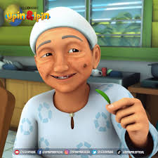
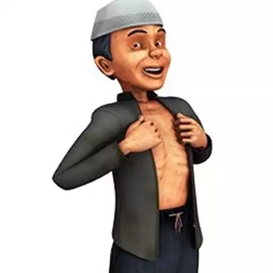
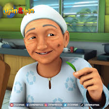
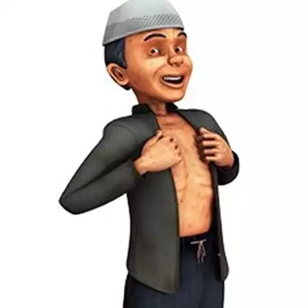

Asal-Mula
Awalnya, Upin & Ipin ditayangkan khusus untuk menyambut Ramadan pada tahun 2007 untuk mendidik anak-anak mengenai arti dan kepentingan dari bulan suci Ramadan. Kata Safwan, "Kami memulai seri animasi empat menit ini untuk menguji penerimaan pasar lokal serta mengukur bagaimana reaksi pada kemampuan penceritaan kami."Sambutan meriah terhadap kartun pendek ini mendorong Les' Copaque agar menerbitkan satu musim lagi menyambut bulan Ramadan yang seterusnya. Nizam percaya bahwa aspek kebudayaan Malaysia yang berlatarkan sebagai sebuah kampung yang sederhana pasti dapat menarik minat pasar internasional. Seperti pada kartun animasi Doraemon asal Jepang yang laris di seluruh dunia meskipun berlatarkan budaya setempat dan bukannya budaya internasional.
Tombol